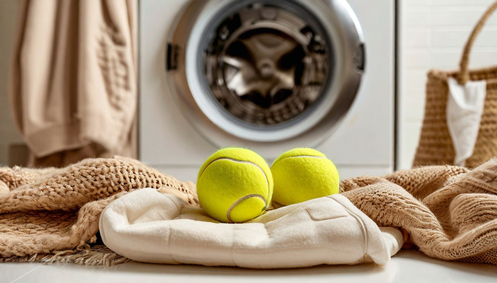
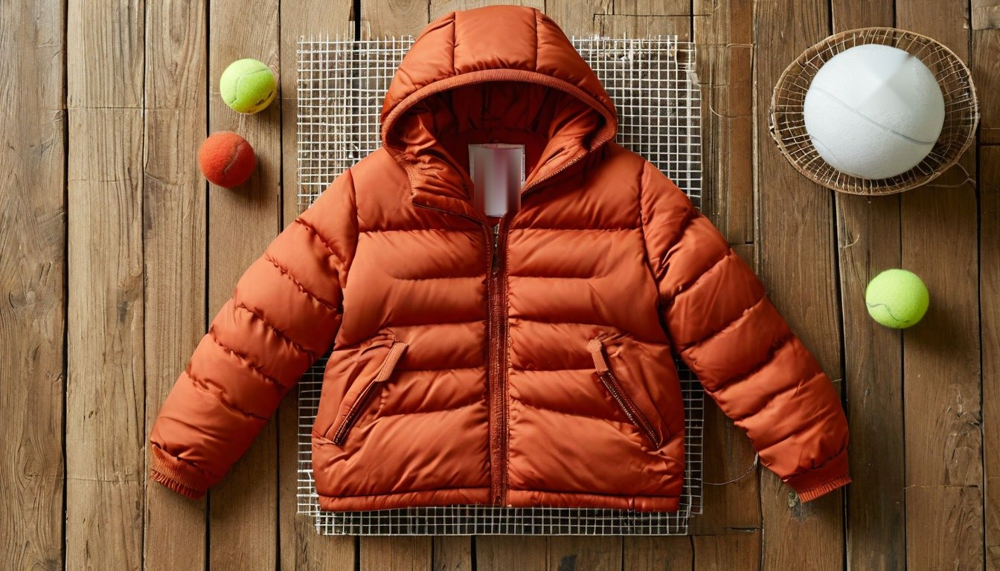

Как постирать пуховик в стиральной машине, чтобы пух не сбился: 5 ошибок
Пуховик пролежал всё лето в шкафу, а в октябре на нём видны пятна на манжетах и сероватый воротник. Стирать страшно: все слышали истории о пухе, сбившемся в комки по углам.
На самом деле пуховик спокойно стирается в машинке. Пух сбивается не от самой стирки, а от нескольких ошибок до и после неё. Их легко избежать, если знать заранее.
У нас двое детей, а детские пуховики пачкаются быстрее всех: горки, лужи, рукава в мокром снегу. Поэтому вопрос стирки у нас встаёт каждую осень. Вот пять ошибок, которые чаще всего портят пуховик.
Ошибка №1: обычный порошок
Порошок плохо вымывается из пуха, оставляет разводы на ткани и склеивает пушинки. После такой стирки пуховик теряет объём и греет хуже.
Что делать: брать специальное жидкое средство для пуховиков или для шерсти и деликатных тканей. Кондиционер не добавлять, потому что он тоже оседает на пуху и утяжеляет его.
Засаленные манжеты и воротник лучше заранее потереть мягкой щёткой с каплей того же средства. В машинке такие места сами отстирываются плохо.

Ошибка №2: стирать без теннисных мячиков
Самый неочевидный и самый полезный совет. Во время стирки и отжима пух сбивается, а без помощи он так и остаётся комками.
Что делать: положить в барабан два-три чистых теннисных мячика или специальные шарики для стирки. Они разбивают комки и распределяют пух равномерно. Новые цветные мячики могут полинять, поэтому для светлого пуховика их сначала стоит прокипятить или постирать отдельно.
Ошибка №3: высокая температура и сильный отжим
Горячая вода вредит и пуху, и пропитке ткани, а сильный отжим сминает пуховик в плотный ком, который трудно распушить.
Что делать: программа «Пуховик» или «Деликатная», 30 градусов, отжим не выше 600–800 оборотов. Перед стиркой застегнуть все молнии и вывернуть пуховик наизнанку.
Мех с капюшона обязательно отстегнуть, а из карманов достать всё до последней бумажки. В детских пуховиках там часто прячутся фантики и камешки.
Ошибка №4: одно полоскание
Остатки средства в пуху и есть главная причина разводов после высыхания. Одного полоскания для такой объёмной вещи мало.
Что делать: включить дополнительное полоскание. Если после стирки на ткани видны белёсые следы, прополоскать ещё раз без средства. Это займёт лишние полчаса, зато потом не придётся перестирывать всю вещь.

Ошибка №5: сушить на батарее или на плечиках
На батарее пух пересыхает и ломается, а ткань может пожелтеть. На плечиках мокрый пух под своим весом сползает вниз, и вверху остаются пустые участки.
Что делать: сушить пуховик горизонтально на сушилке, вдали от батареи. Каждые несколько часов встряхивать и разбивать комки руками. Полностью он высыхает за двое суток, и убирать его в шкаф раньше нельзя.
Если пух всё-таки сбился
Комки после сушки ещё можно спасти. Если у вас есть сушильная машина, положите пуховик туда с теннисными мячиками на щадящий режим без нагрева.
Если машины нет, встряхивайте и взбивайте пуховик руками, как подушку, а самые плотные комки аккуратно разминайте пальцами через ткань. Обычно это занимает пару вечеров, но объём возвращается.
От автора
Химчистка кажется надёжнее, и многие боятся стирать пуховик сами. Но дома при правильных условиях выходит ничуть не хуже, а детские пуховики пачкаются так часто, что возить их в химчистку каждый раз слишком дорого.
Главное здесь терпение на этапе сушки. Двое суток кажутся долгими, но комки, оставшиеся после спешки, потом уже не распушить.
Подписывайтесь, чтобы не пропустить следующий разбор: как убрать соль с обуви и не испортить кожу, ведь зима уже скоро.
А вы стираете пуховики сами или доверяете химчистке?